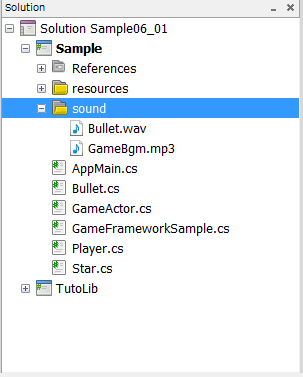

This chapter explains how to play back sound effects and BGM.
Contents
The following is a case example showing how to loop playback BGM upon the start of a program and creating a sound effect when a button is pressed.
First, register the sound effect file and BGM file to be played back to the project.
Open sample/Tutorial/Sample06_01/Sample06_01.sln.
- In the PSM Studio Solution Explorer, select the sound folder, right click - [Add] - [File] and select the file you want to play back.

- After the files are registered, right-click on a file and select [Build Action] - [Content].
- Currently, only the WAV format is supported as a sound effect file format.
- Currently, only the mp3 format is supported as a BGM file format.
- The folder to register the files need not be sound; it can be an arbitrary location.
Sound Effects
Playback of sound effects requires the use of the Sound class and the SoundPlayer class.
Sound soundBullet; public SoundPlayer soundPlayerBullet; ... //@j 効果音の初期化。 soundBullet = new Sound("/Application/sound/Bullet.wav"); soundPlayerBullet = soundBullet.CreatePlayer();The Sound class represents sound effect data.
The SoundPlayer class plays back sound effects.
One type of sound effect can be simultaneously played back by using multiple SoundPlayer classes for one Sound class.
BGM
Playback of BGM requires the use of the Bgm class and the BgmPlayer class.
Bgm bgm; public BgmPlayer bgmPlayer; ... //@j BGMの初期化。 bgm = new Bgm("/Application/sound/GameBgm.mp3"); bgmPlayer = bgm.CreatePlayer(); bgmPlayer.Loop = true;The Bgm class represents BGM data.
The BgmPlayer class plays back BGM.
Only one Bgm can be played back at a time. Thus, multiple BgmPlayer cannot be created.
Set true to bgmPlayer.Loop in order to play back the BGM in a loop.
To output a sound effect, call Play() of the SoundPlayer. In the following example, the sound of a bullet shot is output by pressing the circle or cross button.
Sample/Tutorial/Sample06_01/Player.cs
if((gs.PadData.ButtonsDown & (GamePadButtons.Circle | GamePadButtons.Cross)) != 0) { gs.soundPlayerBullet.Play(); ... }Call BgmPlayer.Play() to play back BGM.
sample/Tutorial/Sample06_01/GameFrameworkSample.cs
bgmPlayer.Play();
Make settings to enable bullets to be fired when a button is pressed.
In the same manner as with the stars, create a class for bullets.
sample/Tutorial/Sample06_01/Bullet.cs
public class Bullet : GameActor { static int idNum=0; float speed=8; public Bullet(GameFrameworkSample gs, string name, Texture2D textrue, Vector3 position) : base (gs, name) { Name = name + idNum.ToString(); this.sprite = new SimpleSprite( gs.Graphics, textrue); this.sprite.Center.X = 0.5f; this.sprite.Center.Y = 0.5f; idNum++; this.sprite.Position = position; } public override void Update() { sprite.Position.Y -= speed; if (sprite.Position.Y < 0 ) { this.Status = Actor.ActorStatus.Dead; } base.Update(); } }Use Update() of the Player class to generate a Bullet class instance when a button is pressed and to register it to the actor tree.
Sample/Tutorial/Sample06_01/Player.cs
if((gs.PadData.ButtonsDown & (GamePadButtons.Circle | GamePadButtons.Cross)) != 0) { gs.soundPlayerBullet.Play(); gs.Root.Search("bulletManager").AddChild(new Bullet(gs, "bullet", gs.textureBullet, this.sprite.Position)); }When executed, BGM will be played back upon game start. Moreover, when a button is pressed, sound effect will be played back along with a bullet being fired.